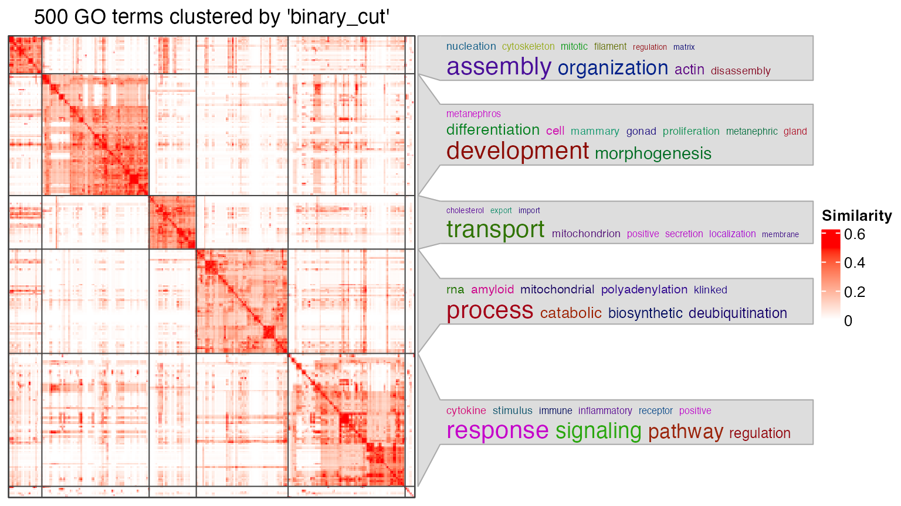
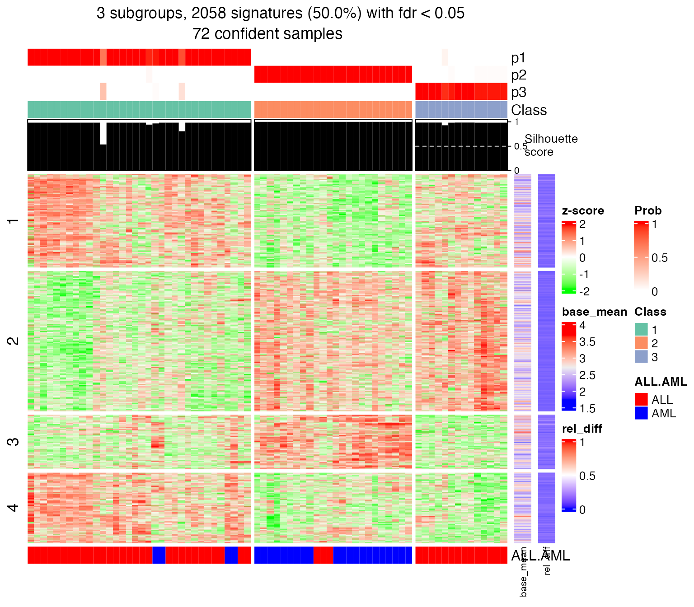
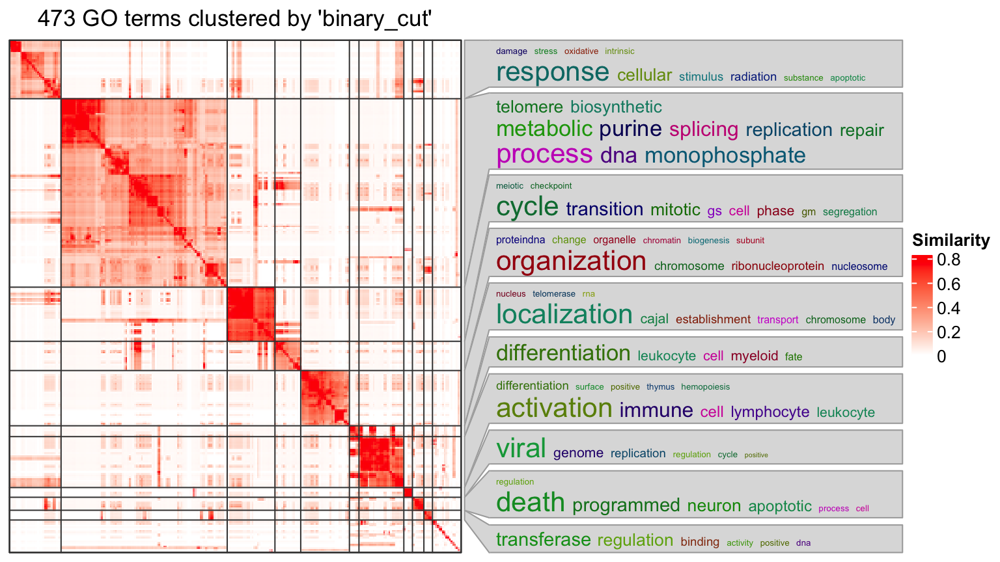
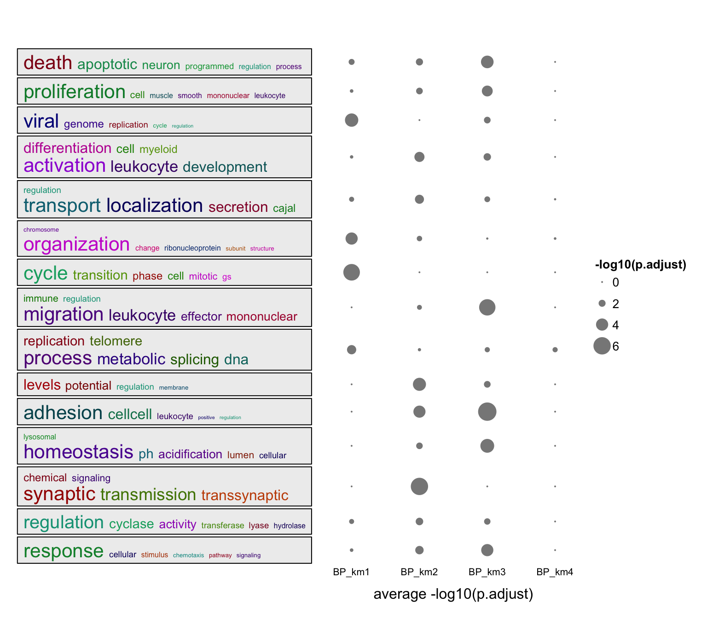
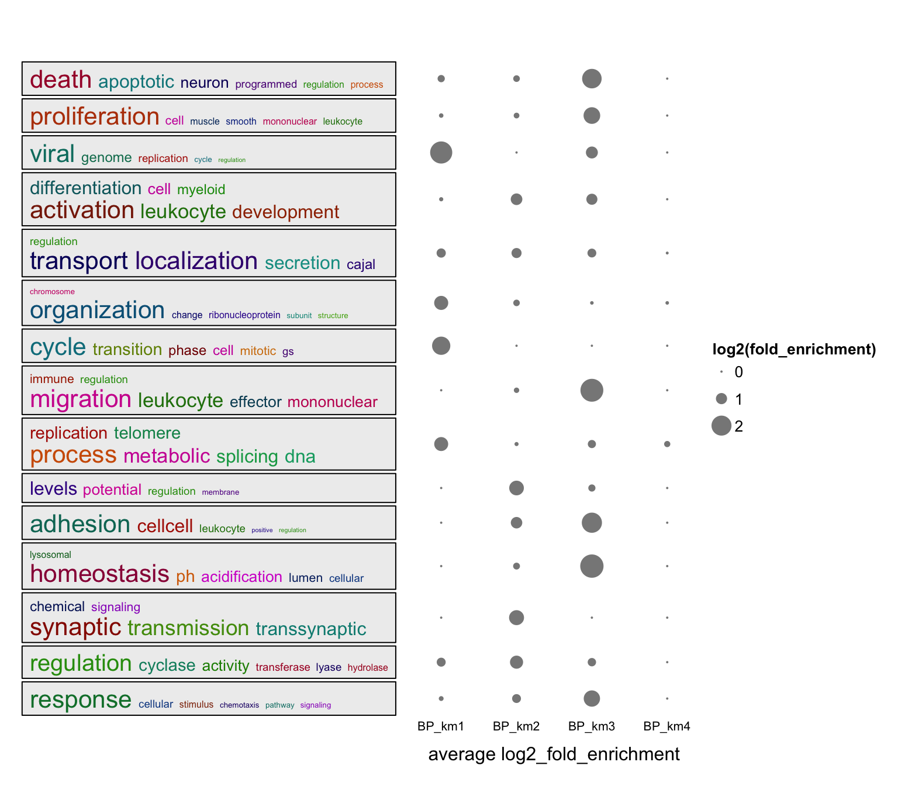
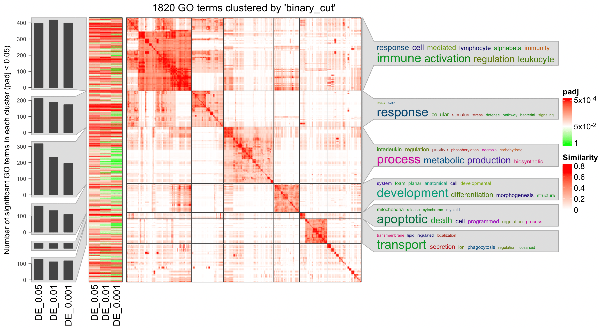

Topic 5-02: simplifyEnrichment
Zuguang Gu z.gu@dkfz.de
2024-01-21
Source:vignettes/topic5_02_simplifyEnrichment.Rmd
topic5_02_simplifyEnrichment.RmdsimplifyEnrichment is suggested to work on GO enrichment results.
A vector of GO IDs
## Loading required package: BiocGenerics##
## Attaching package: 'BiocGenerics'## The following objects are masked from 'package:stats':
##
## IQR, mad, sd, var, xtabs## The following objects are masked from 'package:base':
##
## Filter, Find, Map, Position, Reduce, anyDuplicated, aperm, append,
## as.data.frame, basename, cbind, colnames, dirname, do.call,
## duplicated, eval, evalq, get, grep, grepl, intersect, is.unsorted,
## lapply, mapply, match, mget, order, paste, pmax, pmax.int, pmin,
## pmin.int, rank, rbind, rownames, sapply, setdiff, sort, table,
## tapply, union, unique, unsplit, which.max, which.min## Loading required package: grid## ## ## ========================================
## simplifyEnrichment version 1.11.1
## Bioconductor page: https://bioconductor.org/packages/simplifyEnrichment/
## Github page: https://github.com/jokergoo/simplifyEnrichment
## Documentation: https://jokergoo.github.io/simplifyEnrichment/
## Examples: https://simplifyenrichment.github.io/
##
## If you use it in published research, please cite:
## Gu, Z. simplifyEnrichment: an R/Bioconductor package for Clustering and
## Visualizing Functional Enrichment Results, Genomics, Proteomics &
## Bioinformatics 2022.
##
## This message can be suppressed by:
## suppressPackageStartupMessages(library(simplifyEnrichment))
## ========================================
library(simplifyEnrichment)
set.seed(888)
go_id = random_GO(500)
df = simplifyGO(go_id)## You haven't provided value for `ont`, guess it as `BP`.## Cluster 500 terms by 'binary_cut'... 14 clusters, used 1.153243 secs.
## Perform keywords enrichment for 5 GO lists...
head(df)## id cluster
## 1 GO:0006997 1
## 2 GO:0003190 2
## 3 GO:0015917 3
## 4 GO:0016119 4
## 5 GO:0098884 3
## 6 GO:0002842 5Multiple enrichment results
We have some signature genes. They can be clustered into four groups with their expression profile. We apply GO enrichment on the four gene lists and we have four enrichment tables.
## * 72/72 samples (in 3 classes) remain after filtering by silhouette (>= 0.5).
## * cache hash: 87c63a8cabc898f97a024514962787f7 (seed 888).
## * calculating row difference between subgroups by Ftest.
## * split rows into 4 groups by k-means clustering.
## * 2058 signatures (50.0%) under fdr < 0.05, group_diff > 0.
## - randomly sample 2000 signatures.
## * making heatmaps for signatures.
lt = readRDS(system.file("extdata", "lt_enrichment_tables.rds", package = "GSEAtraining"))
length(lt)## [1] 4
head(lt[[1]])## ID Description GeneRatio
## GO:0006974 GO:0006974 cellular response to DNA damage stimulus 77/471
## GO:0006281 GO:0006281 DNA repair 61/471
## GO:0000278 GO:0000278 mitotic cell cycle 78/471
## GO:1903047 GO:1903047 mitotic cell cycle process 70/471
## GO:0051276 GO:0051276 chromosome organization 58/471
## GO:0006260 GO:0006260 DNA replication 38/471
## BgRatio pvalue p.adjust qvalue
## GO:0006974 871/18614 3.252635e-22 1.545002e-18 1.174030e-18
## GO:0006281 587/18614 3.683205e-21 8.220452e-18 6.246633e-18
## GO:0000278 933/18614 5.191864e-21 8.220452e-18 6.246633e-18
## GO:1903047 777/18614 1.148628e-20 1.363995e-17 1.036485e-17
## GO:0051276 626/18614 8.913192e-18 8.467532e-15 6.434386e-15
## GO:0006260 278/18614 1.862901e-17 1.474797e-14 1.120682e-14
## geneID
## GO:0006974 VRK1/CDC7/PARG/APEX1/NUDT1/MCM2/MTREX/MCM7/PARK7/HMGB1/MDC1/NCOA6/USP10/MCM6/TOPBP1/PARP1/TOP2A/PCNA/RPA3/MIF/DNTT/TP53/NPM1/XRCC5/BAG6/CDK2/UBE2A/SSRP1/RFC4/GTF2H1/NONO/MLH1/PMS1/TAF7/MTA1/CBX1/FOXO1/MRE11/ZMYND8/ATR/CUL4A/FH/POLG/UBE2V2/MSH6/BARD1/PSMD14/MEN1/TRIM28/POLA1/H2AX/RRM1/DDX1/SOX4/MCM5/CDK9/LIG4/RBBP5/CHD4/UNG/TERF2/IRF3/MCM3/SMC1A/MYC/BCL2/ATM/PRKDC/MSH3/SMARCA4/FMR1/DDB1/IFI16/HMGB2/TFAP4/ATRX/CRADD
## GO:0006281 CDC7/PARG/APEX1/NUDT1/MCM2/MCM7/PARK7/HMGB1/MDC1/USP10/MCM6/TOPBP1/PARP1/PCNA/RPA3/DNTT/TP53/NPM1/XRCC5/CDK2/UBE2A/SSRP1/RFC4/GTF2H1/NONO/MLH1/PMS1/TAF7/MTA1/MRE11/ZMYND8/ATR/CUL4A/FH/POLG/UBE2V2/MSH6/BARD1/PSMD14/MEN1/TRIM28/POLA1/H2AX/RRM1/DDX1/MCM5/CDK9/LIG4/CHD4/UNG/TERF2/MCM3/SMC1A/ATM/PRKDC/MSH3/SMARCA4/FMR1/DDB1/HMGB2/ATRX
## GO:0000278 VRK1/CDC7/PRMT5/APEX1/MCM2/CLTC/NOLC1/KIF14/RANBP1/CUL7/CKAP5/PSME2/SEPTIN6/NCAPD2/MDC1/GINS1/NPAT/MCM6/TOPBP1/PPP2R1A/PCNA/RPA3/PSME1/RHOA/KPNB1/RB1/TP53/RASA1/STMN1/MAP4/CDK2/TTK/CCND3/SPTBN1/PKIA/CDC25B/CDC20/ARL3/CDK4/MRE11/DCTN2/PKD2/YWHAE/CUL1/CUL4A/FHL1/TBCE/PAFAH1B1/BARD1/CTDSP2/MEN1/POLA1/PRKCB/CKS1B/CKS2/RRM1/SON/RBL2/PRMT2/NUP88/MCM3/SMC1A/MYC/IQGAP1/BCL2/MYH10/ATM/PRKDC/SMARCA4/CALM2/MYB/NAA10/TUBB/DDB1/TFAP4/ATRX/KIF11/CRADD
## GO:1903047 VRK1/CDC7/PRMT5/APEX1/MCM2/CLTC/KIF14/RANBP1/CUL7/CKAP5/PSME2/SEPTIN6/NCAPD2/MDC1/GINS1/NPAT/MCM6/TOPBP1/PPP2R1A/PCNA/PSME1/RHOA/KPNB1/RB1/TP53/RASA1/STMN1/MAP4/CDK2/TTK/CCND3/SPTBN1/PKIA/CDC25B/CDC20/ARL3/CDK4/MRE11/DCTN2/PKD2/CUL1/CUL4A/FHL1/TBCE/PAFAH1B1/BARD1/CTDSP2/POLA1/PRKCB/CKS1B/CKS2/RRM1/SON/RBL2/PRMT2/MCM3/SMC1A/MYC/BCL2/MYH10/ATM/PRKDC/SMARCA4/CALM2/NAA10/DDB1/TFAP4/ATRX/KIF11/CRADD
## GO:0051276 APEX1/CCT8/MCM2/KIF14/CCT5/MCM7/HMGB1/NCAPD2/GINS1/MCM6/PUM2/PPP2R1A/PARP1/TOP2A/PCNA/RPA3/RHOA/CCT6A/KPNB1/RB1/TP53/HNRNPA2B1/XRCC5/BAG6/CDK2/TTK/RFC4/SSBP1/NASP/CDC20/MLH1/G3BP1/MRE11/CCT4/ATR/DCTN2/CCT7/TRIM28/HSP90AA1/DNMT1/EHMT2/DDX1/MCM5/CCT3/LIG4/TERF2/MCM3/SMC1A/MYC/ATM/PRKDC/MSH3/TOP2B/SMARCA4/NAA10/HMGB2/ATRX/KIF11
## GO:0006260 CDC7/MCM2/MCM7/GINS1/MCM6/JADE2/TOPBP1/PPP2R1A/PARP1/PCNA/RPA3/TP53/CDK2/SSRP1/RFC4/SSBP1/NASP/ORC2/DUT/MRE11/ATR/ORC3/POLG/POLRMT/BARD1/POLA1/RRM1/EHMT2/RBBP4/PRIM1/PRIM2/MCM5/CDK9/LIG4/TERF2/MCM3/SET/ATRX
## Count n_hits n_genes gs_size n_totle log2_fold_enrichment z_score
## GO:0006974 77 77 471 871 18614 1.804775 12.14540
## GO:0006281 61 61 471 587 18614 2.038038 12.32378
## GO:0000278 78 78 471 933 18614 1.724186 11.63381
## GO:1903047 70 70 471 777 18614 1.832029 11.74674
## GO:0051276 58 58 471 626 18614 1.872479 10.91452
## GO:0006260 38 38 471 278 18614 2.433504 11.91483simplifyGOFromMultipleLists() can visualize GO enrichment from multiple results.
simplifyGOFromMultipleLists(lt, padj_cutoff = 0.001)
Word clouds
Let’s say, for the following plot, the heatmap is might not be necessary to put into the final report.
df = lt[[1]]
go_id = df$ID[df$p.adjust < 0.01]
simplifyGO(go_id)
summarizeGO() makes an even simpler plot with word cloud and simple statistical graphics.
Two inputs for the function:
- A vector of GO IDs
- A numeric vector of corresponding statistics
l = df$p.adjust < 0.01
summarizeGO(df$ID[l], -log10(df$p.adjust)[l], axis_label = "average -log10(p.adjust)")
Or visualize average log2 fold enrichment:
l = df$p.adjust < 0.01
summarizeGO(df$ID[l], df$log2_fold_enrichment[l], axis_label = "average log2(fold enrichment)")
summarizeGO() also supports multiple enrichment results. In this case, value should be is a list of numeric named vectors which contains significant GO terms in each enrichment table.
value = lapply(lt, function(df) {
v = -log10(df$p.adjust)
names(v) = df$ID
v[df$p.adjust < 0.001]
})
summarizeGO(value = value, axis_label = "average -log10(p.adjust)",
legend_title = "-log10(p.adjust)")
Or use log2 fold enrichment:
value = lapply(lt, function(df) {
v = df$log2_fold_enrichment
names(v) = df$ID
v[df$p.adjust < 0.001]
})
summarizeGO(value = value, axis_label = "average log2_fold_enrichment",
legend_title = "log2(fold_enrichment)")
Practice
Practice 1
Recall in Topic 2-02: Implement ORA from stratch, we compared the ORA results when setting DE cutoffs to 0.05, 0.01 and 0.001. Now perform a simplify enrichment analysis on the three ORA tables and compare them.
de = readRDS(system.file("extdata", "de.rds", package = "GSEAtraining"))
de = de[, c("symbol", "p_value")]
de = de[!is.na(de$p_value), ]
de_genes_1 = de$symbol[de$p_value < 0.05]
de_genes_2 = de$symbol[de$p_value < 0.01]
de_genes_3 = de$symbol[de$p_value < 0.001]
library(GSEAtraining)
library(org.Hs.eg.db)## Loading required package: AnnotationDbi## Loading required package: stats4## Loading required package: Biobase## Welcome to Bioconductor
##
## Vignettes contain introductory material; view with
## 'browseVignettes()'. To cite Bioconductor, see
## 'citation("Biobase")', and for packages 'citation("pkgname")'.## Loading required package: IRanges## Loading required package: S4Vectors## Warning: package 'S4Vectors' was built under R version 4.3.2##
## Attaching package: 'S4Vectors'## The following object is masked from 'package:utils':
##
## findMatches## The following objects are masked from 'package:base':
##
## I, expand.grid, unname
gs = get_GO_gene_sets_from_orgdb(org.Hs.eg.db, "BP", gene_id_type = "SYMBOL")## 'select()' returned 1:many mapping between keys and columnsSolution
lt = list(
"DE_0.05" = tb1,
"DE_0.01" = tb2,
"DE_0.001" = tb3
)
simplifyGOFromMultipleLists(lt, padj_cutoff = 0.05)